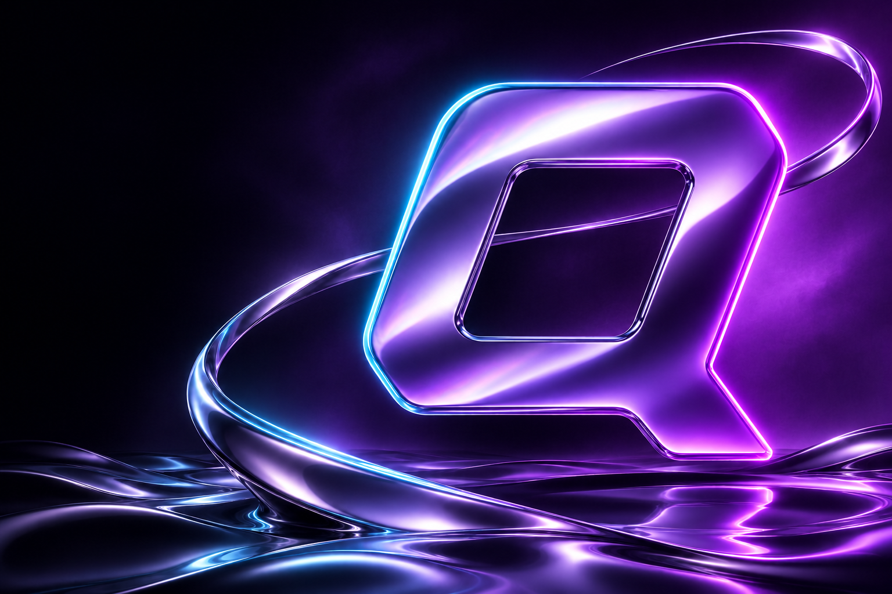

01THE SPARK
Put an idea into orbit.
Name your coin. Give it a face. Add your public dev wallet and choose the vote target that feels right.
Find a spark before it becomes a movement.
Back the idea. Build the crowd. Shape what launches next.

Spot the spark.Discover before the launch.
✧Make it count.Three signals. Your conviction.
↗Start a movement.Your idea. The community’s call.
Find the idea that makes you stop scrolling.
Try another search, follow an idea, or start something of your own.
Signals are a show of interest. Not a token purchase.
You choose what deserves to exist.
The smallest gap between an idea and its next chapter.
A coin can be copied.
A community can’t.
A little structure for a big idea.
Your target. Your wallet. Their vote.
Name your coin. Give it a face. Add your public dev wallet and choose the vote target that feels right.
People explore, follow and signal. Three active votes mean every choice carries a little conviction.
Explore the field ↗Reach the target. The countdown begins. You launch manually on Pump.fun from your declared dev wallet.
Coming to Solana.
One community. A whole new beginning.
Good questions deserve clear answers.
No. Browse, vote and submit without connecting. Creators enter a public Solana dev wallet they plan to launch from. Entering an address does not verify ownership. Never enter a seed phrase or private key.
No. A signal is free and expresses interest. It does not buy tokens, reserve an allocation or guarantee an early purchase.
The creator sets the target, collection deadline and countdown. These rules and the declared wallet are locked after publication. Once quorum is reached, the creator is responsible for the manual launch.
When the deadline expires, the idea moves to the archive and its active signals are released. The creator can submit a new idea with new rules.
They are currently saved on this device in your browser. The concept collection illustrates the discovery experience. QORUM does not automatically deploy tokens, move funds or execute purchases.